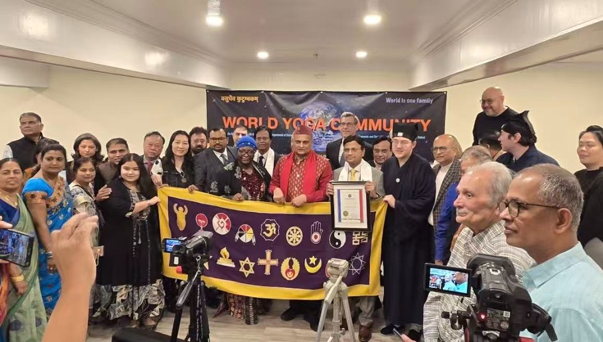
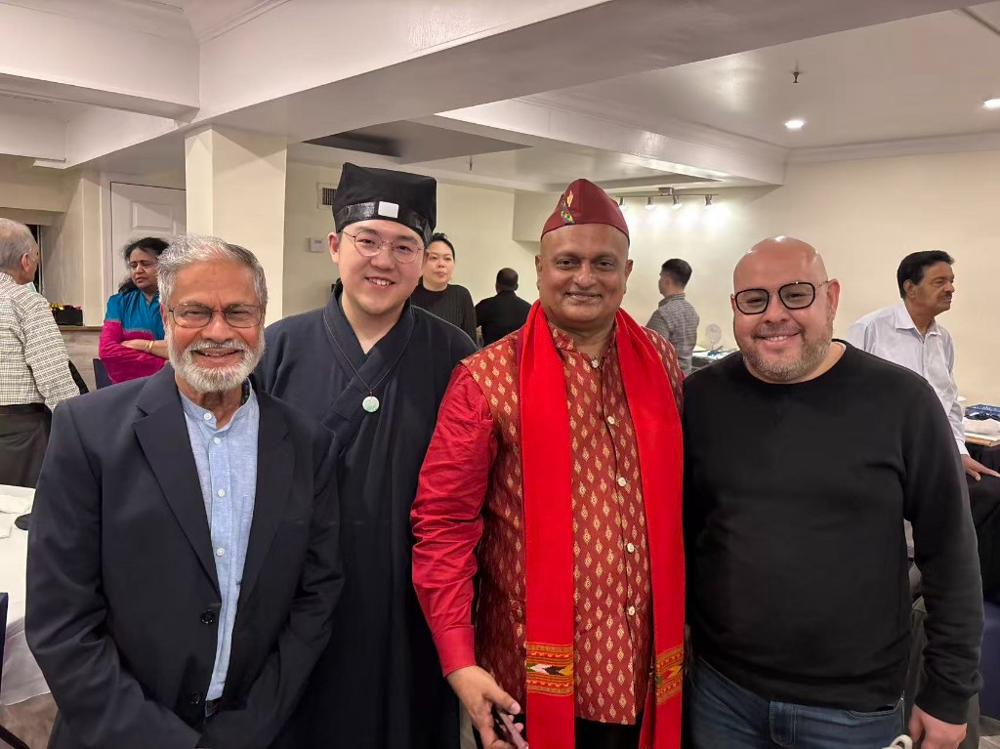
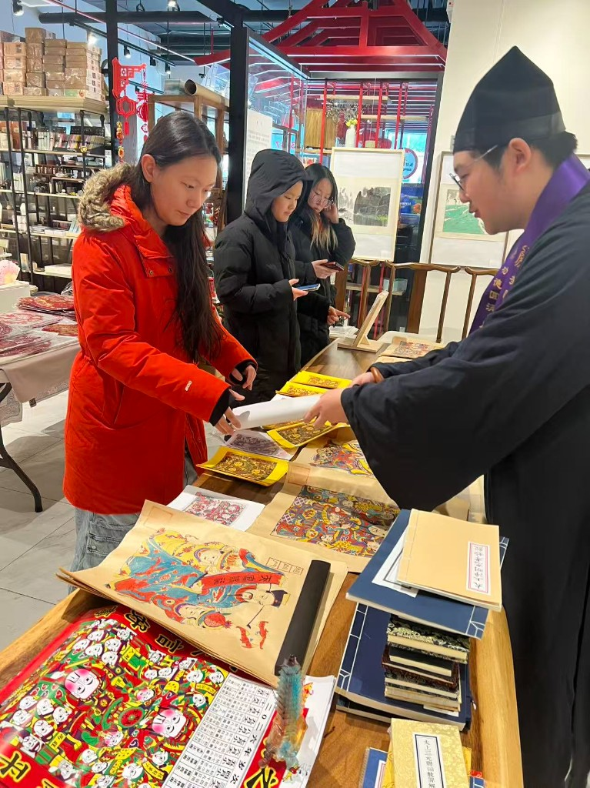
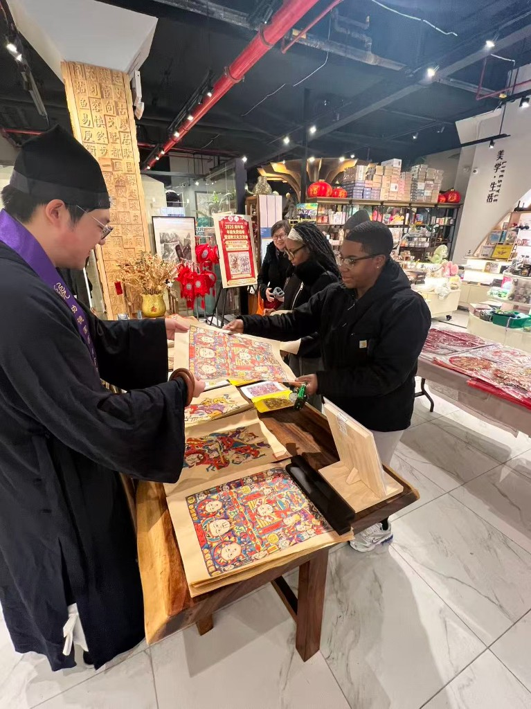

联合国世界跨信仰和谐周闭幕庆典
2026年2月28日，美国阳翥道教协会会长吉法新率团出席于纽约举行的"联合国世界跨信仰和谐周（World Interfaith Harmony Week）"系列闭幕庆典活动。作为首个且唯一受邀参与该平台活动的道教代表组织，美国阳翥道教协会在国际跨信仰舞台上发出道教声音，展示中华传统文化的智慧与精神内涵。本次活动汇聚多国外交代表，包括委内瑞拉外交官、纽约州议员、纽约市第105分局负责人，以及多位联合国体系相关官员、联合国宗教NGO委员会（CCUN）领导代表出席支持。现场还包括来自多个国际跨信仰组织的代表与领袖，共同参与对话与交流。美国阳翥道教协会以"道法自然、和而不同"为核心理念，积极参与国际跨宗教合作与文明对话，促进不同信仰之间的理解与互信，推动道教文化在国际社会中的传播与认知。


新春年画结缘活动
2026年2月1日，美国阳翥道教协会于纽约法拉盛举办新春"结缘年画"文化活动，作为 World Interfaith Harmony Week（世界跨宗教和谐周）期间的首项道教活动。活动以传统年画为载体，向社区民众介绍道教文化中关于天人合一、祈福纳祥、顺应天时的思想内涵。通过现场讲解与文化交流，展示道教所承载的和平、吉庆与和谐理念。本次活动吸引了来自不同文化与宗教背景的参与者，使更多民众在跨文化交流中了解道教传统，感受中国新年的文化魅力与精神价值。

美国阳翥道教协会成立仪式
2025年9月21日，美国阳翥道教协会于纽约法拉盛安桥酒店隆重举行成立仪式。经过一年的筹备与社区活动，协会正式宣告成立，旨在弘扬道教文化，服务社区精神福祉，促进跨宗教与跨文化交流，并为社会公益事业贡献力量。仪式包括协会介绍、嘉宾致辞、道教知识与文化分享，以及未来发展方向的展示。


道德经诵经比赛
国际道教日举行道德经诵经比赛，吸引各国道教爱好者参加。

免费发放天师骑艾虎版画
2025年端午节举行免费发放"天师骑艾虎"版画。


第一次参观大都会博物馆
受大都会博物馆邀请，第一次私人参观为对外开放馆藏道教法衣。此为道教协会第一次受邀参观。2025.1.6


第二次参观大都会博物馆
第二次组织参观大都会博物馆，继续探索中国宗教艺术和文化遗产。

第三次参观大都会博物馆
第三次组织参观大都会博物馆，深化对亚洲灵性艺术和历史文物中道教影响的理解。